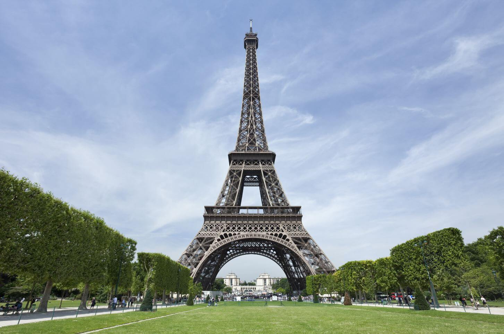
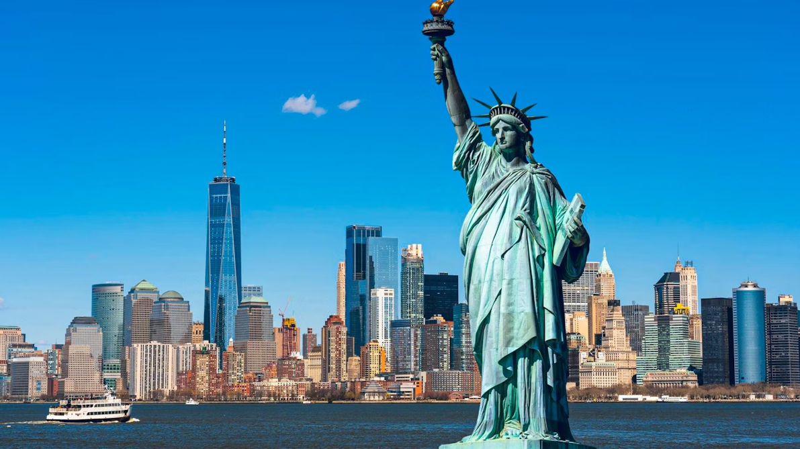
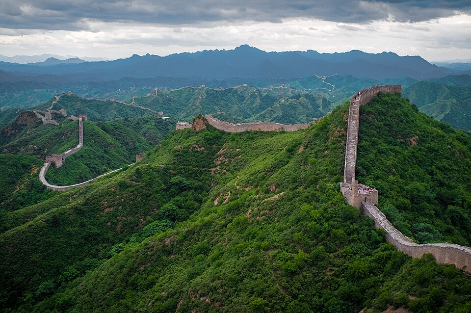
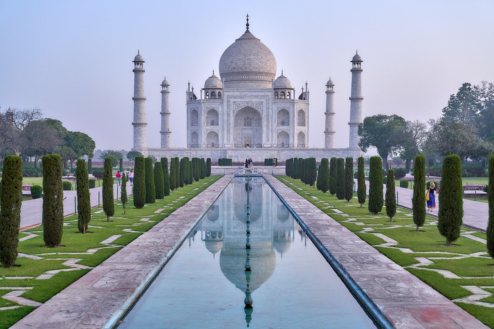
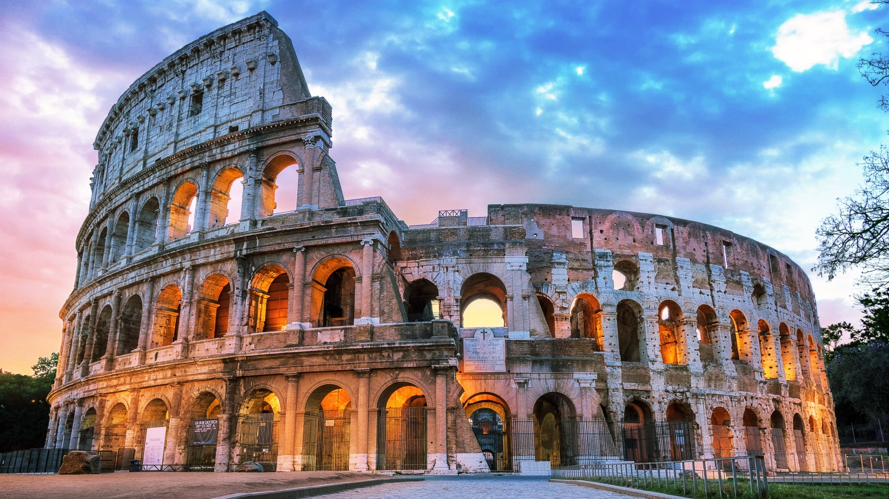
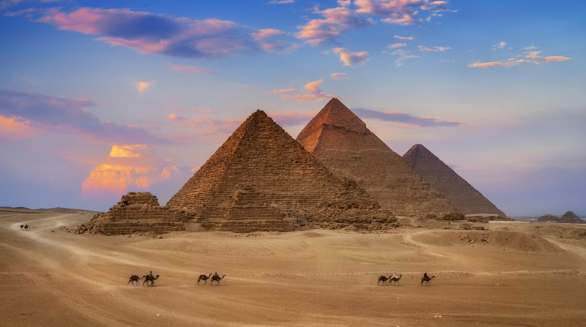
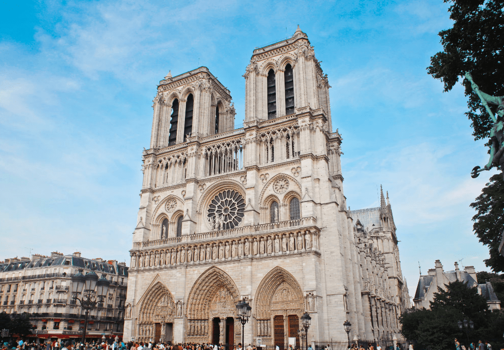
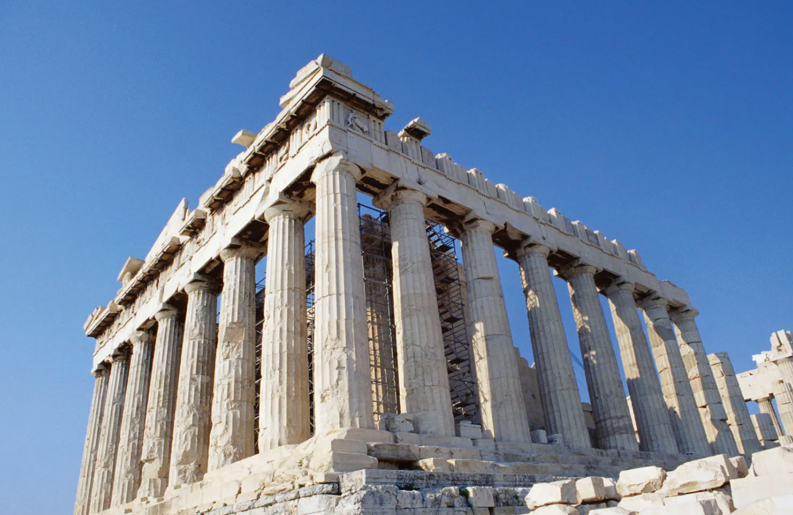

This is a collection of famous landmarks around the world, showcasing their history, architectural styles, cultural significance, and practical visiting tips. Each section provides insights into the unique features and stories behind these iconic structures.
Eiffel Tower


The Eiffel Tower was built in Paris, France in the year 1889.
It is a wrought-iron lattice tower located on the Champ de Mars in Paris, named after the engineer Gustave Eiffel, whose company designed and built the tower and is one of the most recognizable landmark in the world and a global cultural icon of France and one of the most-visited paid monuments in the world.
The Eiffel Tower was originally constructed as the entrance arch for the 1889 Exposition Universelle (World's Fair) held in Paris, celebrating the 100th anniversary of the French Revolution. Its purpose was to showcase French engineering and industrial prowess to the world. Though initially met with criticism, it became a symbol of modernity and innovation.
The tower was designed by engineer Gustave Eiffel and his company. Construction began in 1887 and was completed in 1889. Made primarily of wrought iron, the structure stands on the Champ de Mars in Paris. It was named after Gustave Eiffel and remains one of the most recognizable landmarks globally.
The Eiffel Tower was the tallest man-made structure in the world for 41 years until the Chrysler Building in New York surpassed it in 1930.
Great Wall of China

Location: Northern China
Year built: 7th century BC (with various sections built over centuries)
Historical purpose: Built to protect Chinese states and empires against invasions, it is a symbol of China's strength and perseverance.
Taj Mahal

Location: Agra, India
Year built: 1632-1653
Historical purpose: Commissioned by Mughal Emperor Shah Jahan in memory of his wife Mumtaz Mahal, it is a masterpiece of Mughal architecture and a UNESCO World Heritage Site.
Machu Picchu
Location: Cusco Region, Peru
Year built: 1450
Historical purpose: An Incan citadel set high in the Andes Mountains, it is renowned for its sophisticated dry-stone construction and panoramic views.
Colosseum

Location: Rome, Italy
Year built: 70-80 AD
Historical purpose: An ancient amphitheater used for gladiatorial contests and public spectacles, it is a symbol of the Roman Empire's architectural and engineering prowess.
Pyramids of Giza

Location: Giza, Egypt
Year built: 2580-2560 BC (Great Pyramid)
Historical purpose: Built as tombs for the Pharaohs, they are the last of the Seven Wonders of the Ancient World still in existence and a testament to ancient Egyptian civilization.
Statue of Liberty
Location: New York City, USA
Year built: 1886
Historical purpose: A gift from France to the United States, it symbolizes freedom and democracy, welcoming
Sydney Opera House
Location: Sydney, Australia
Year built: 1973
Historical purpose: An iconic performing arts center known for its unique architectural design, it is a UNESCO World Heritage Site and a symbol of Sydney.
Angkor Wat
Location: Siem Reap, Cambodia
Year built: Early 12th century
Historical purpose: Originally constructed as a Hindu temple dedicated to the god Vishnu, it is the largest religious monument in the world and a symbol of Cambodia's cultural heritage.
Leaning Tower of Pisa
Location: Pisa, Italy
Year built: 1173-1372
Historical purpose: Known for its unintended tilt, it is a freestanding bell tower of the cathedral in Pisa and a masterpiece of medieval European architecture.
Architectural Styles
Gothic Architecture

Characterized by pointed arches, ribbed vaults, and flying buttresses. Common in cathedrals and churches from the 12th-16th centuries.
Examples: Notre-Dame de Paris, Cologne Cathedral
Baroque Architecture
Dramatic, bold, and theatrical style with curved forms, elaborate ornamentation, and grand scale. Flourished in 17th-18th century Europe.
Examples: The Palace of Versailles, St Paul's Cathedral, Royal Palace of Caserta
Neoclassical Architecture
Inspired by classical Greek and Roman architecture, featuring columns, symmetry, and simple geometric forms. Popular in 18th-19th centuries.
Examples: White House,
Modernist Architecture
Emphasizes function over form, with clean lines, minimal ornamentation, and use of modern materials like steel and glass. 20th century movement.
Examples: test
Islamic Architecture
Features geometric patterns, calligraphy, domes, and courtyards. Developed in Islamic regions from the 7th century onward.
Examples:test
Renaissance Architecture
Revival of classical forms with symmetry, proportion, and geometry. Developed in 15th century Italy.
Examples:test
Art Deco Architecture
Bold geometric forms, rich colors, and lavish ornamentation. Popular in the 1920s-1930s.
Examples: test
Romanesque Architecture
Characterized by semi-circular arches, thick walls, and sturdy pillars. Common in 10th-12th century Europe.
Examples: test
Brutalist Architecture
Uses raw concrete, monolithic forms, and utilitarian design. Mid-20th century movement.
Examples: test
- include interactive map where clicking the continents will show the famous landmarks in each continent with images and brief descriptions of each landmark
-->
Landmarks by Continent
Landmarks by Continent
Explore famous landmarks categorized by continent. Click on a continent to view its iconic structures.
Minigame
Question will appear here
Lives: 3
P

Cultural Significance
Eiffel Tower
The Eiffel Tower is not only a symbol of Paris but also represents French art, culture, and history. It attracts millions of visitors each year, making it a significant part of France's tourism industry.
Great Wall of China
The Great Wall is a UNESCO World Heritage Site and a symbol of China's historical strength and perseverance. It plays a crucial role in Chinese culture and attracts tourists from around the world.
Quiz Section
Visiting Tips
Visiting Tips for Famous Landmarks
Plan your visit during off-peak hours to avoid crowds.
Check the official website for entry fees and opening hours.
Consider guided tours for a more in-depth experience.
Wear comfortable shoes as many landmarks require walking.
Respect local customs and regulations while visiting.